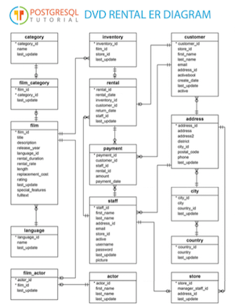

Chapter 4 This Book’s Learning Goals and Use Cases (03)
4.1 Learning Goals
After working through this tutorial, you can expect to be able to:
- Set up a PostgreSQL database in a Docker environment.
- Run queries against PostgreSQL in an environment that simulates what you will find in a corporate setting.
- Understand techniques and some of the trade-offs between:
- queries aimed at exploration or informal investigation using dplyr; and
- those where performance is important because of the size of the database or the frequency with which a query is run.
- Understand the equivalence between
dplyrand SQL queries and how R translates one into the other - Understand some more advanced SQL techniques.
- Gain familiarity with the standard metadata that an SQL database contains to describe its own contents.
- Gain some understanding of techniques for assessing query structure and performance.
- Understand enough about Docker to swap databases, e.g. Sports DB for the DVD rental database used in this tutorial. Or swap the database management system (DBMS), e.g. MySQL for PostgreSQL.
4.2 Imaging a DVD rental business
- Years ago people rented videos on DVD disks and video stores were a big business.
- Imagine managing a video rental store like Movie Madness in Portland, Oregon.
- What data would be needed and what questions would you have to answer about the business?
This tutorial uses the Postgres version of “dvd rental” database which represents the transaction database for running a movie (e.g., dvd) rental business. The database can be downloaded here. Here’s a glimpse of it’s structure, which will be discussed in some detail:

Entity Relationship diagram for the dvdrental database
A data analyst uses the database abstraction and the practical business questions to answer business questions.
4.3 Use cases
Imagine that you have one of several roles at our fictional company DVDs R Us and that you need to:
- As a data scientist, I want to know the distribution of number of rentals per month per customer, so that the Marketing department can create incentives for customers in 3 segments: Frequent Renters, Average Renters, Infrequent Renters.
- As the Director of Sales, I want to see the total number of rentals per month for the past 6 months and I want to know how fast our customer base is growing/shrinking per month for the past 6 months.
- As the Director of Marketing, I want to know which categories of DVDs are the least popular, so that I can create a campaign to draw attention to rarely used inventory.
- As a shipping clerk, I want to add rental information when I fulfill a shipment order.
- As the Director of Analytics, I want to test as much of the production R code in my shop as possible against a new release of the DBMS that the IT department is implementing next month.
- etc.
4.4 Investigating a question using with an organization’s database
- Need both familiarity with the data and a focus question
- An iterative process where
- the data resource can shape your understanding of the question
- the question you need to answer will frame how your see the data resource
- You need to go back and forth between the two, asking
- do I understand the question?
- do I understand the data?
- An iterative process where
- How well do you understand the data resource (in the DBMS)?
- Use all available documentation and understand its limits
- Use your own tools and skills to examine the data resource
- what’s missing from the database: (columns, records, cells)
- why is there missing data?
- How well do you understand the question you seek to answer?
- How general or specific is your question?
- How aligned is it with the purpose for which the database was designed and is being operated?
- How different are your assumptions and concerns from those of the people who enter and use the data on a day to day basis?